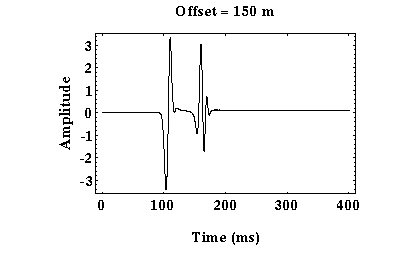

Records of Ground Motion
Thus far, we have shown wave propagation through a variety of media. When seismic waves interact with a boundary in the subsurface, some of the energy is transmitted through the boundary, some is reflected off of the boundary, and if the velocities of the media separated by the boundary represent a velocity increase to the propagating wave, some of the energy is transmitted along the boundary in the form of head waves.
Unfortunately, we can not record the wave field as it propagates through the earth at all points and at all times as was done to produce the snapshots and movies shown previously. Instead, we must be content to record the wavefield along the surface of the Earth. That is, what we will actually record is the motion of the Earth's surface caused by seismic wave propagation through the Earth generated by our seismic source. Instruments that are capable of recording ground motion are referred to as seismometers or geophones. These instruments will be described in more detail later. Suffice it to say now, that they are capable of recording the ground motion produced by the seismic waves we are interested in studying.
 An example of the ground motion we would record from a seismic wave propagating through our layer over a halfspace model is shown to the right. Time runs along the horizontal axis, and amplitude of the ground motion runs along the top. The line in the plot, therefore, represents the time history of ground motion at this one particular location, which is referred to as a seismogram. In this case, the seismometer employed records only up/down ground motion. For this example, trace excursion downward represents ground motion that was upward. A trace excursion upward represents ground motion that was downward.
There are two distinct seismic arrivals recorded on this record: one at a time of about 100 ms, the other at about 150 ms*. From this single record along, it is impossible for us to tell what these arrivals actually are. For example, the first arrival could be the direct arrival or the head wave. Usually, we will record ground motion at a number of different receivers and plot this motion as a function of time and as a function of distance from the source. An example of such a plot is shown below.

In this case, time runs along the vertical axis and distance from the source along the horizontal axis. At each appropriate shot and receiver distance, we have plotted the seismogram (record of ground motion at that location). In this particular experiment, receivers are located at five meter distance intervals. Plots such as these are usually referred to as shot records.
The advantage of looking at shot records is that you can see how the time of arrivals varies as distance from the shot varies. This variation in the time versus distance is commonly referred to as moveout. Arrivals with large moveouts dip steeply on shot records. Those with a small amount of moveout dip less steeply.
If you examine the shot record shown above carefully, you can see the three seismic waves defined previously (i.e., direct, reflected, and refracted). Using the snapshots or movies of wave propagation presented earlier, try to identify the three arrivals on this shot record. Remember that the reflected arrival can never be the first arrival recorded on a given seismogram.
*These times represent the time after the source was initiated.
Seismology
- Simple Earth Model: Low-Velocity Layer Over a Halfspacepg 11
- Head Wavespg 12
- Records of Ground Motionpg 13
- Travel-time Curves for a Simple Earth Modelpg 14
- First Arrivalspg 15
- Determining Earth Structure from Travel Timespg 16
- Derivation of Travel Time Equationspg 17
- High-Velocity Layer Over a Halfspace: Reprisepg 18
- Picking Times of Arrivalspg 25
- Wave Propagation with Multiple Horizontal Layerspg 26
- Travel Time Curves from Multiple Horizontalpg 27
- Hidden Layerspg 28
- Head Waves from a Dipping Layer: Shooting Down Dippg 29
- Head Waves from a Dipping Layer: Shooting Up Dippg 30
- A Field Procedure for Recognizing Dipping Bedspg 31
- Estimating Dips and Depths from Travelpg 32